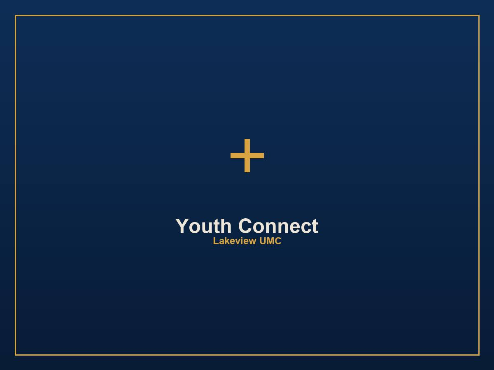
Youth Connect
A monthly outreach event for 100-120 teens and volunteers. ₱4,000/month covers food for everyone - a full table for every teen who walks in.
₱48,000/year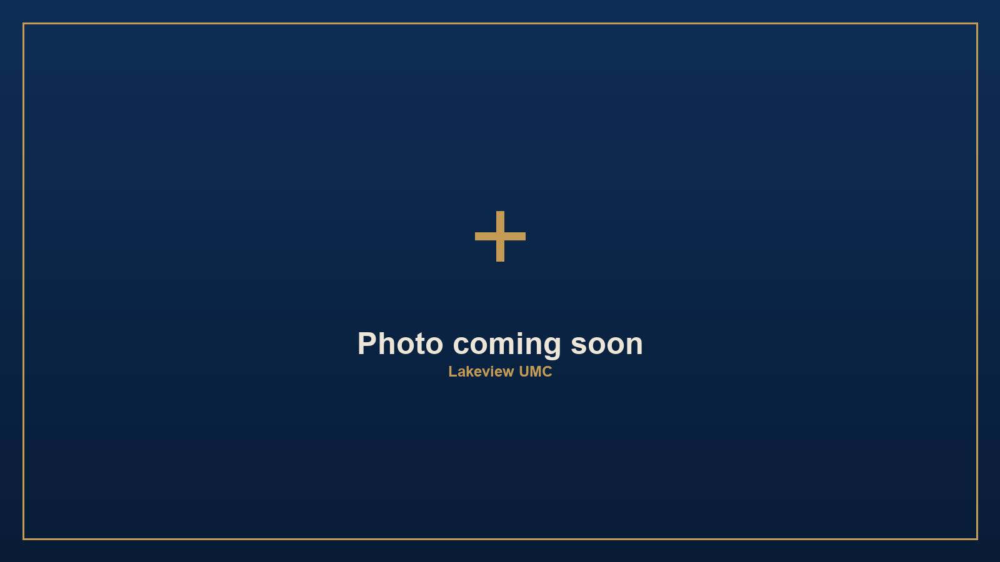
An invitation from Lakeview United Methodist Church · @RockforJesus
Every week, around 130 people walk through our doors - kids, youth, young adults, and families - taking real steps toward becoming like Jesus. We'd be honored to have you walk with us.
Lakeview United Methodist Church is a Spirit-empowered, gospel-centered, evangelical United Methodist congregation. Our vision is to grow 1,000 to 2,000 Christlike disciples who are empowered, equipped, and actively making more disciples through a multiplying cell-group system - not just a bigger crowd, a multiplying family.
A disciple's journey here moves through clear milestones: salvation, water baptism, the Encounter Retreat, baptism of the Holy Spirit, becoming an apprentice leader, and eventually commissioning into ministry. Your partnership helps carry real people through every one of those steps.
Here's the rhythm your partnership supports every single week.
The sermon series is the root everything else grows from.
Open, low-commitment small groups after Sunday service, discussing that week's sermon.
Committed weekly groups walking through our LANDASIN curriculum - three levels (TUKLAS: new life/salvation, SIBOL: becoming like Christ, GANAP: equipped to lead), 36 lessons over about 8-9 months.
Every Tuesday and Thursday.
At-home household discipleship built around a weekly Family Challenge.
An evangelistic outreach event every 4th Saturday of the month reaching barangay youth, always landing on the gospel with an altar call.
Each one is already happening. Your partnership is what keeps it going.

A monthly outreach event for 100-120 teens and volunteers. ₱4,000/month covers food for everyone - a full table for every teen who walks in.
₱48,000/year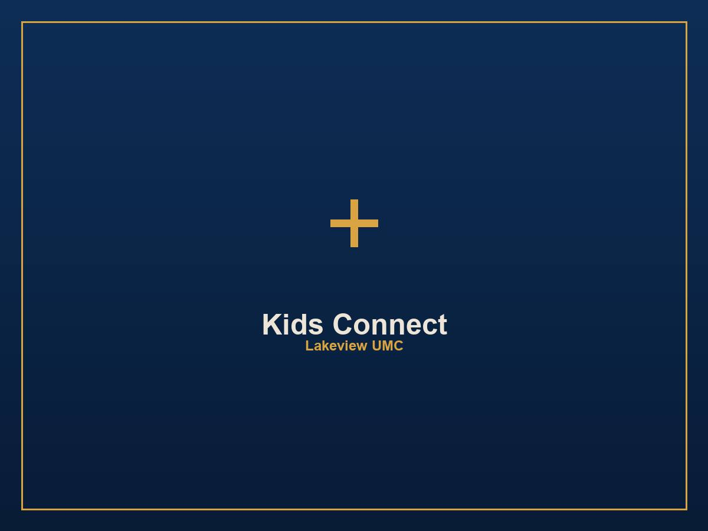
A monthly gathering for 60-100 kids learning who Jesus is, for ₱3,000/month.
₱36,000/year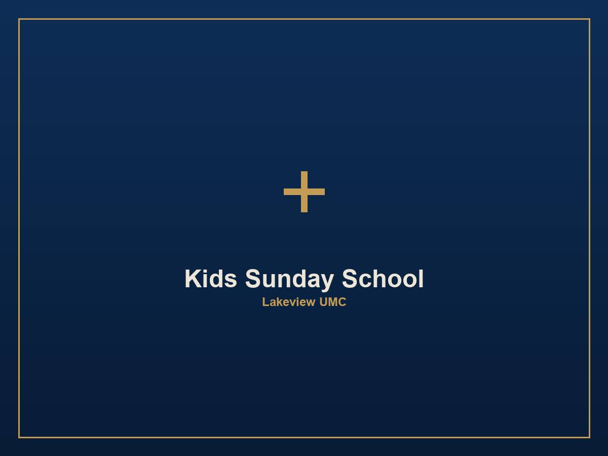
A weekly program for our youngest learners, every single Sunday, at ₱1,000/week.
₱52,000/year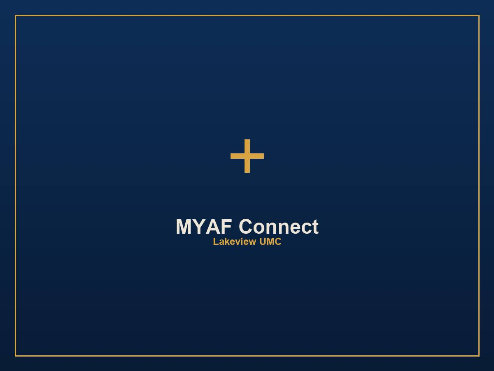
A quarterly gathering for 30-50 young adults plus volunteers, at ₱3,000/quarter.
₱12,000/year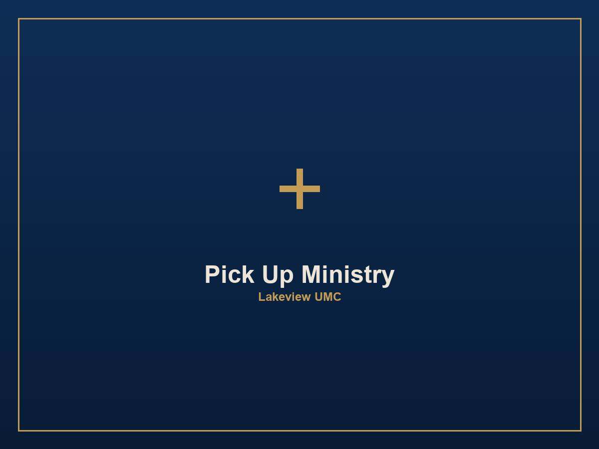
Our effort to physically pick up people who want to come to church but have no transportation - ₱2,000/week in gasoline.
₱104,000/year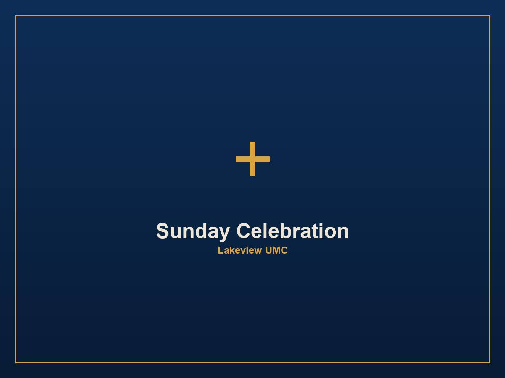
Keeping the table open after service so no one has to rush home hungry, on a tight, carefully managed weekly budget of ₱3,000/week.
₱156,000/year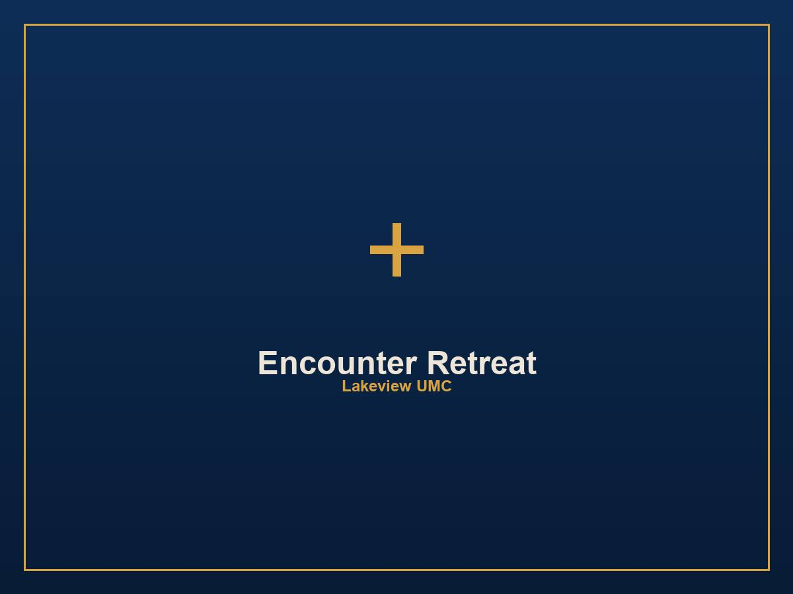
A life-marking retreat weekend, held twice a year, that marks a key milestone in a disciple's journey. ₱50,000 per retreat, twice a year.
₱100,000/year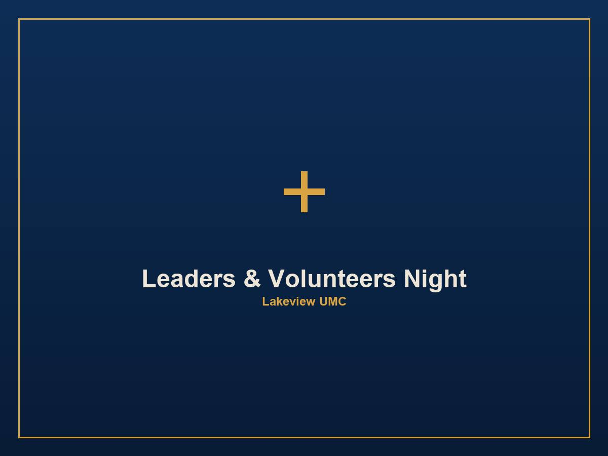
An annual night honoring our unpaid volunteer leaders who give their weeknights and weekends to disciple others.
₱10,000/year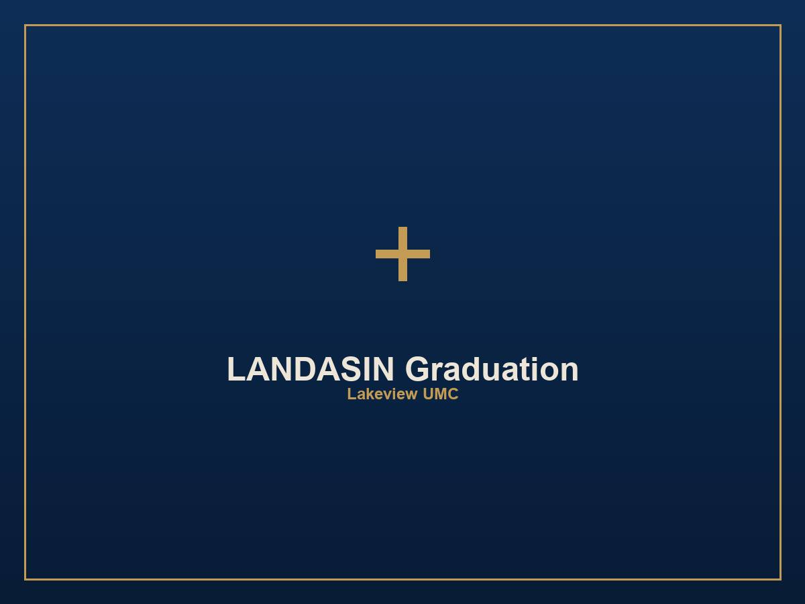
An annual celebration for every disciple who completes the full LANDASIN journey and is ready to lead others through it.
₱10,000/yearTransparency is part of the invitation. Here's exactly what a year of this ministry rhythm costs.
| Ministry | What It Covers | Annual Cost |
|---|---|---|
| Youth Connect | Monthly outreach for 100-120 teens | ₱48,000 |
| Kids Connect | Monthly gathering for 60-100 kids | ₱36,000 |
| Kids Sunday School | Weekly program, every Sunday | ₱52,000 |
| MYAF Connect | Quarterly young adult gathering | ₱12,000 |
| Pick Up Ministry | Weekly gasoline for rides to church | ₱104,000 |
| Sunday Celebration | Weekly lunch fellowship | ₱156,000 |
| Encounter Retreat | Twice-a-year retreat weekend | ₱100,000 |
| Leaders & Volunteers Night | Annual appreciation night | ₱10,000 |
| LANDASIN Graduation | Annual graduation celebration | ₱10,000 |
| Total Annual Ministry Need | ₱528,000 | |
| Approximately, per month | ₱44,000 | |

[PLACEHOLDER TESTIMONY - a short story of someone's journey through DGroup or a milestone, in their own words]
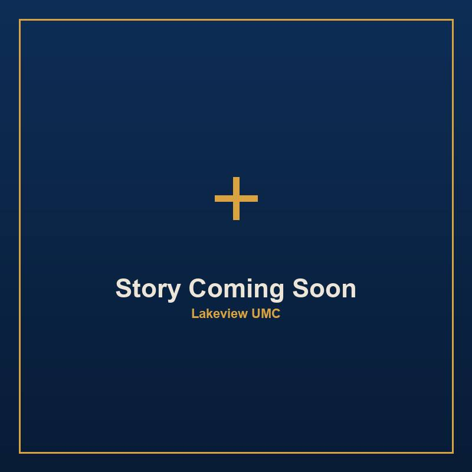
[PLACEHOLDER TESTIMONY - a short story from a Youth Connect or Encounter Retreat milestone, "sobrang laking tulong" style authenticity encouraged]

[PLACEHOLDER TESTIMONY - a short story from a DGroup leader or apprentice leader about what this system has made possible]
Choose the way that fits you, your family, your company, or your church.
A recurring pledge you renew with one tap each month - not an automatic charge, just a standing commitment you're invited back to keep.
Partner MonthlyA spontaneous, no-pressure blessing - whenever you feel led, for whatever amount.
Give a Love GiftName: [FILL IN]
GCash Number: [FILL IN]
Bank: [FILL IN]
Account Name: [FILL IN]
Account Number: [FILL IN]
After sending, a quick message to us helps us thank you properly and keep clean records - see contact info in the footer.
Yes. Giving is powered by PayMongo, a payment gateway regulated by the Bangko Sentral ng Pilipinas and certified PCI-DSS Level 1, the highest standard for handling payment data.
Yes. One-time gifts and Love Gifts can both be given via GCash through PayMongo.
You can set up a monthly giving rhythm as a pledge - one tap each month to renew it - rather than an automatic recurring charge. We'll let you know here if automatic monthly billing becomes available in the future.
[PLACEHOLDER - pending confirmation of the church's SEC/BIR non-profit registration status. We'll update this answer once that's confirmed.]
[PLACEHOLDER - Jayvee's contact info, Discipleship Head]
Whatever you decide, thank you for reading this far and for considering what God might be inviting you into. If giving isn't possible for you right now, prayer is itself a form of partnership we'd be grateful for.
We'd love to have you be part of this story.
Become a Ministry Partner